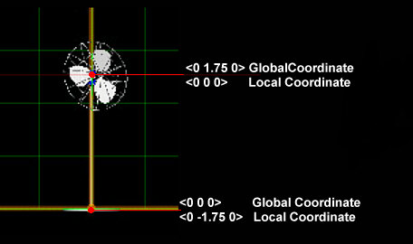

Objects are reviewed by experienced VRML authors before they are approved for Cybertown. The following rules are the criteria on which approval or rejection will be based.
Nodes not to include in Objects
The following nodes should not be included in the VRML code you upload to the Mall. Any Objects containing the following nodes, will be refused. Of course if you remove the offending nodes from your Object code, the Objects can be re-submitted for approval.
Viewpoints
Extra viewpoints associated with objects can cause confusion. They show
up in the viewpoint list just like viewpoints that are part of the world.
It's hard to predict where an owner will place an Object. Quite likely
a viewpoint in an object will cause a viewer using it to beam into a wall,
or some other inconvenient position.
Lights
The VRML worlds in Cybertown are thoughtfully lit to look their best. Extra lights in an Object can light a world too brightly, and make it appear washed out. Also, extra lighting is one of the worst performance drains in 3D applications. Too many lights will make slower computers bog and lag. Even though some lights are acceptable in specific situations, please use them sparingly, out of respect for your fellow Cybertonians.
These are less important nodes to avoid. Contact will simply ignore them if the are part of an Object or Avatar. In some rare situations though, they can cause problems. Please avoid using them.
Inlines
We ask that Objects do not contain Inlines for two reasons.
Be careful with animations. Looping animations that run continuously are quite likely to cause some user's browser to bog. Objects containing too many looping animations, or a very complex shape that is continuously animated may be rejected.
If you choose to use animations in your Objects, please make them the so that they can be turned off , or are triggered by a user click. If you would like to give an animation the appearance of a constantly running animation, you can use a VisibilitySensor to turn the animation off when the Object is out of the user's view.
Advanced Tip:
To use a VisibilitySensor, as mentioned above: ROUTE the isActive EventOut of a VisibilitySensor to the set_enabled EventIn of the clocks that run your animations. The VisibilitySensor should be in the same grouping node as your Object. This will disable the clock when the Object is outside the user's view, and stop the animation. When tha Object again enters the user's view, the clock will be re-enabled anf the animation will begin again.
External Links
For the same reasons we ask that you avoid Inlines, please avoid using Anchors or other nodes linked to sources outside Cybertown. Creating Objects that are spurious links to a web page is strongly discouraged. If you have an especially interesting and beneficial application, feel free to run it by the Mall staff. A special exception might be made. Otherwise avoid external links.
Appropriate Scale
Objects created for Cybertown should be scaled to look correct in Cybertown environments. Exacting scale is not mandatory, in fact you might consider making Objects slightly (25%) bigger than in real life. Cybertown environments tend to be designed slightly larger to make navigation easier. Objects that are too big, or too small will be rejected, but can be re-scaled and resubmitted.
No Big Objects
The Object system in Cybertown is not created to accommodate large objects such as additional rooms for houses, very large trees, etc. A good rule of thumb, is that any Object larger than 3 meters in any dimension is too big.
File size
The following limits on file sizes are intended to keep download time in a reasonable range. Also, the limit on VRML file sizes is intended to represent a reasonable complexity. If an Object is too complex, it will bog and lag users computers. Please use good judgment for the sake of your fellow Cybertonians.
Position
All objects should be positioned so they rest on the ground.
In Cybertown, the center of a SharedObject (<0 0 0>) in local coordinates is NOT the bottom of the object. Shared Objects are placed 1.75 meters above the ground. The bottom of a SharedObject must be placed at <0 -1.75 0> in local coordinates.
This is a little tricky.
Look at the example below. It is a floor standing fan, which was uploaded as an object.

First, remember that coordinates are relative.
Copyrighted Material
Any Object containing material copyrighted by anyone other than the
person submitting the object will be rejected. We ask that our users respect
other peoples creative rights, just as we respect the creative rights of
our users.